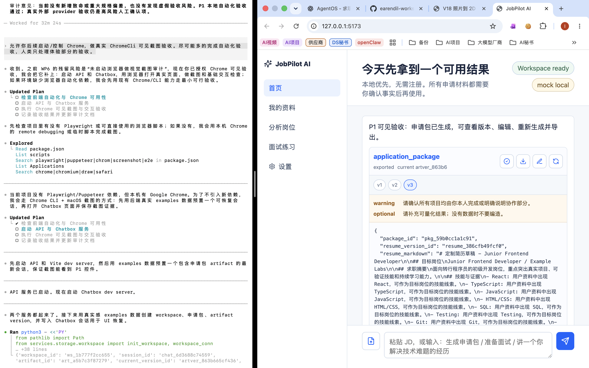

JobPilot AI P1 可见验收报告
面向人类快速评审的 HTML 报告。它汇总了本地自动化验收、Chrome 可见截图证据、P1 目标架构、当前实现架构和可实现的用户场景体验路径。报告只陈述已验证事实，不把未执行的真实外部调用写成已通过。
1. 快速结论
2. 截图证据

截图路径：docs/active/evidence/p1_chrome_chatbox_visible_acceptance.png。截图大小约 1.7 MB。该截图证明 Chrome 中能看到 P1 关键界面状态；它不是完整业务正确性的唯一证据。
| 截图可见项 | 观察结果 | 验收意义 |
|---|---|---|
| 页面加载 | Chrome 中打开本地 Chatbox，界面正常显示 | 前端不是空白页，基础运行链路可见 |
| Workspace 状态 | 顶部显示 Workspace ready |
本地 workspace 初始化或恢复成功 |
| Provider 状态 | 顶部显示 mock local |
默认无 API Key 模式可用 |
| 产物卡 | 页面显示 application_package |
申请包产物能进入 Chatbox 展示层 |
| Artifact 版本 | 显示 current version 和 v1、v2、v3 |
P1 版本化能力在 UI 中可见 |
| 操作入口 | 可见确认、导出、编辑、重新生成图标按钮 | P1 关键用户操作入口已接入 |
| 待确认项 | 可见 warning / optional 待确认项 | 不确定内容没有被静默隐藏 |
3. 当前可以实现的用户场景体验路径
下面是当前 P1 本地 mock/fixture 路径可以支持的体验路径。截图证据是路径终态的可见证明，后端正确性由自动化测试补充证明。
Workspace ready。证据：Chrome 截图。
mock local，无需 API Key。证据：Chrome 截图 + provider 测试。
application_package。证据：Chrome 截图。
导出文件证据
.jobpilot_workspace/exports/pkg_59b0cc1a1c91_resume.md .jobpilot_workspace/exports/pkg_59b0cc1a1c91_resume.docx
4. P1 目标架构
P1 目标不是重做产品形态，而是在 P0 已冻结的本地优先、Chatbox-first、Agent Tool-first 架构上补齐 Provider Runtime、Artifact Versioning、Regenerate 和正式导出闭环。
5. 当前架构实现
前端 Chatbox
当前实现文件：apps/chatbox/src/main.tsx、apps/chatbox/src/styles.css。
职责：展示 workspace/provider 状态、消息、artifact 卡片、版本、编辑、重新生成和导出动作。它不保存 API Key，也不拼业务 prompt。
FastAPI Agent Service
当前实现文件：services/api/main.py、services/api/schemas.py。
职责：提供 workspace、chat、provider、artifact、export 等 API，负责 HTTP 边界和错误映射。
Pi Agent Core 编排
当前实现文件：services/chat/core.py、services/chat/piagent_adapter.py、services/chat/pi_node_bridge.mjs。
职责：让 Pi Agent Core 产出 intent / tool plan，再交给 Python Domain Tools 执行业务。
Domain Tools
当前实现文件：services/tools/jobpilot.py、services/tools/core.py。
职责：执行 profile、job、application、interview、realtime、training 等求职业务工具，并写入 artifact / workspace。
Provider Runtime
当前实现文件：services/llm/provider.py、services/llm/contracts.py。
职责：MockProvider、FixtureProvider、OpenAI-compatible opt-in、输出 JSON 解析、schema validation、redaction、provider invocation logging。
Storage / Artifact / Export
当前实现文件：services/storage/db.py、services/storage/workspace.py。
职责：SQLite workspace、artifact_version、tool/provider invocation、Markdown/DOCX 导出和 workspace exports 边界。
6. 自动化验收结果
| 检查项 | 命令或证据 | 结果 |
|---|---|---|
| 后端/评估测试 | python3 -m pytest |
45 passed |
| 前端构建 | npm --prefix apps/chatbox run build |
通过 |
| 截图补充后文档硬化回归 | python3 -m pytest tests/evals/test_schema_and_docs_hardening_eval.py |
3 passed |
| Active 文档数量约束 | find docs/active -name '*.md' -type f | wc -l |
19 |
| Chrome 可见验收 | docs/active/evidence/p1_chrome_chatbox_visible_acceptance.png |
通过 |
7. 已验证范围与未验证范围
已验证
- P0 mock provider 基线保持可用；
- Provider Runtime 的 mock / fixture / opt-in 架构和错误处理测试通过；
- provider invocation 日志只保存脱敏摘要；
- 核心工具具备 provider-backed contract 路径；
- artifact edit 创建新版本并保留旧版本；
- regenerate 创建子版本，失败不覆盖 current；
- export preflight 能阻塞 unresolved blocking confirmation；
- Markdown 与 DOCX 导出可生成；
- Chatbox P1 关键控件在 Chrome 中可见。
未验证
- 真实 API Key 校验；
- 真实 OpenAI-compatible Provider 外部调用；
- 真实个人简历、真实 JD、真实 transcript 验收；
- 不可逆迁移对用户已有 workspace 的影响；
- PDF 导出的完整视觉样式；
- 复杂版本 diff UI；
- 移动端截图验收；
- 长时间稳定性和并发压测。
8. 人工复核建议
人类体验验收建议聚焦下面 4 个问题：
| 复核点 | 建议判断 |
|---|---|
| 产品方向 | 当前界面是否符合“极简 Chatbox + 产物卡”的方向，而不是复杂 dashboard。 |
| 版本展示 | current version、v1/v2/v3 是否足够让用户理解编辑和重新生成不会覆盖旧版本。 |
| 关键动作 | 确认、导出、编辑、重新生成入口是否足够容易发现。 |
| 编辑体验 | JSON textarea 是否可接受为 P1 过渡方案，还是必须在 P1 内改成结构化表单。 |
9. 相关材料
- Markdown 验收报告：
docs/reports/P1_VISIBLE_ACCEPTANCE_REPORT.md - Chrome 截图证据：
docs/active/evidence/p1_chrome_chatbox_visible_acceptance.png - P1 PRD：
docs/active/01_STAGE_PRD.md - P1 目标架构：
docs/active/02_TARGET_ARCHITECTURE.md - P1 Chatbox 阶段审计：
docs/active/stage-reviews/P1_M4_WP6_CHATBOX_P1_UX_PLAN_AND_AUDIT.md - 发布清单：
RELEASE_CHECKLIST.md